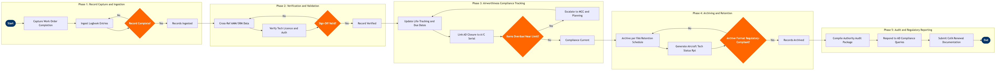

| Step | L4 Step Name | KPI / Target | Pain Point / Risk | Gate |
|---|---|---|---|---|
| 1.1 | Capture work order completion data in MRO system | Work order closure within 2 hours of task completion; >98% same-shift closure rate | Paper-based job cards still used at some line stations — manual re-keying into AMOS introduces transcription errors and delays record closure past the shift boundary | |
| 1.2 | Ingest aircraft technical logbook entries | 100% of ATL entries ingested before next departure; ETL integration uptime ≥99.5% | ETL interfaces to PSS (Amadeus Altéa) are non-standardised across fleet sub-types; legacy B737-700 may lack ETL hardware, requiring manual paper log reconciliation | |
| 1.3 | Validate record completeness against work order schema | Record completeness rate ≥99.5%; incomplete records resolved within 4 hours | AMOS mandatory-field validation rules vary by maintenance type (line vs. heavy); misconfigured validation profiles cause false-pass records that fail FAA audit spot-checks | ⚠ |
| 2.1 | Cross-reference task against approved AMM/SRM data | Zero maintenance releases citing a superseded AMM revision; 100% AMM revision currency per Boeing Service Letter cycle | Boeing Toolbox AMM revision pushes can lag up to 72 hours behind FAA-approval date; tasks executed on interim revisions may require retroactive re-documentation, increasing rework cost | |
| 2.2 | Verify certifying technician licence and authorisation | Zero maintenance releases by technicians with expired or out-of-scope ratings; authorisation check automated for 100% of closures | AMOS authorisation matrix must be kept synchronised with FAA A&P licence renewals and airline-specific OJT records; manual update lag creates windows where expired ratings are not flagged | ⚠ |
| 2.3 | Confirm maintenance release and CRS sign-off | CRS issued within 30 minutes of final inspection; 100% of CRS statements traceable to FAR Part 43 / EASA Part-145 signatory | Dual-registry aircraft (operating under both FAA and EASA authority) require CRS language compliant with both regulations; AMOS templates are not always jurisdiction-aware, requiring manual text override | |
| 3.1 | Update component life-tracking and next-due dates | Component record updated within 8 hours of part installation; life-limit threshold accuracy ±0 flight hours/cycles | CAMP synchronisation with AMOS relies on nightly batch feeds; intraday part swaps on critical life-limited parts (LLPs) may not appear in CAMP until next morning, creating a brief compliance exposure window | |
| 3.2 | Link AD/SB compliance closure record to aircraft serial | 100% of applicable ADs reflected in CAMP within 24 hours of task closure; zero open ADs past compliance deadline | FAA AD effectivity determination for mixed-variant fleets (737-700/800/MAX 8) is complex; incorrect variant mapping in CAMP can result in ADs being erroneously marked not-applicable, triggering FAA enforcement action | |
| 3.3 | Identify overdue or near-threshold compliance items | Zero items entering the overdue state; 100% of near-threshold items actioned ≥7 days before due date | High-frequency short-haul operations (4–6 sector days) can erode compliance buffers faster than weekly planning cycles anticipate; CAMP threshold alerts must be tuned to fleet utilisation intensity to avoid false urgency fatigue | ⚠ |
| 3.4 | Escalate critical airworthiness findings to MCC and Planning | MCC notified within 2 hours of threshold breach identification; grounding avoided in ≥95% of escalations through proactive slot allocation | MCC operational priority (avoiding flight cancellations) conflicts with airworthiness deadline compliance; without a formal escalation SLA in AMOS, airworthiness items can be deferred repeatedly until a hard grounding is unavoidable | ⚠ |
| 4.1 | Archive work orders per FAA retention schedule | 100% of closed work orders archived within 24 hours; retention period ≥24 months per FAR Part 121.380 for routine tasks, ≥life of aircraft for major repairs | FAR Part 121.380 retention tiers (24-month vs. life-of-aircraft) require automated classification at point of archival; miscategorisation of major repairs as routine tasks has resulted in premature record purges discovered only during aircraft sale due diligence | |
| 4.2 | Generate aircraft technical status summary report | ATSR published weekly for all active tails; zero data discrepancies between ATSR and AMOS/CAMP source systems | Tableau dashboards pull from AMOS and CAMP via separate API connectors with different refresh cadences; stale data in one source can make the ATSR appear current while masking an overdue item | |
| 4.3 | Validate archived record format for regulatory compliance | 100% of sampled records pass PDF/A validation; zero records with missing mandatory metadata fields; hash verification failure rate 0% | PDF/A conversion from AMOS native format occasionally strips embedded digital signatures required by FAA AC 120-78B for electronic records; silent conversion failures are only detected during authority audit | ⚠ |
| 5.1 | Compile records package for FAA/authority audit | Audit package delivered within 5 business days of FAA request; zero findings of missing required records in formal audit | Cross-system evidence assembly (AMOS + CAMP + AWS S3 + Boeing Toolbox) is manual; no single orchestration tool exists to compile a complete audit package automatically, creating significant labour cost and risk of omissions under tight FAA timelines | |
| 5.2 | Respond to AD compliance queries from airworthiness authority | AD compliance query response within 10 business days; 100% of responses supported by primary source documentation traceable to original work order | CAMP AD compliance reports are formatted for internal use; exporting in FAA-specified formats (e.g., 8130-3 data elements) requires manual reformatting that introduces transcription risk and delays formal response | ⚠ |
| 5.3 | Submit airworthiness certificate renewal documentation | Certificate renewal submitted ≥30 days before expiry; zero aircraft operated with lapsed airworthiness certificate; discrepancy resolution within 15 business days | FAA FSDO processing times are variable and outside airline control; late submission driven by internal records gaps can result in aircraft AOG during the renewal window, incurring significant revenue loss and customer disruption |